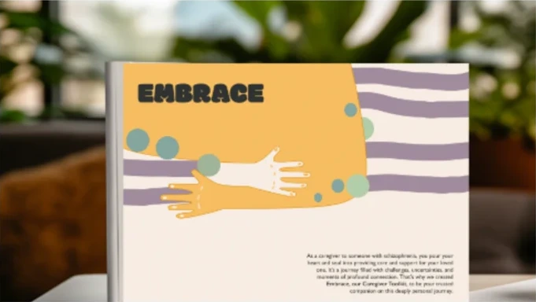
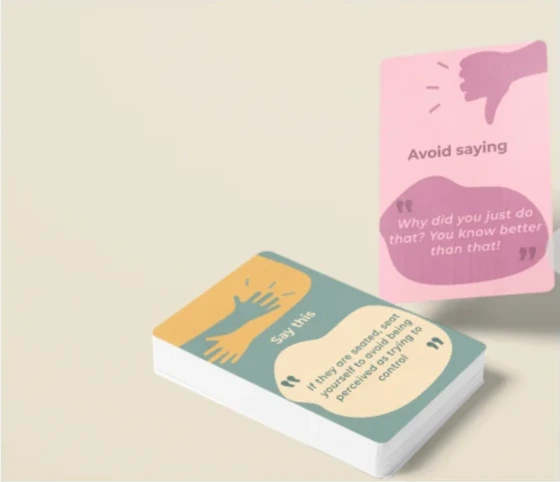
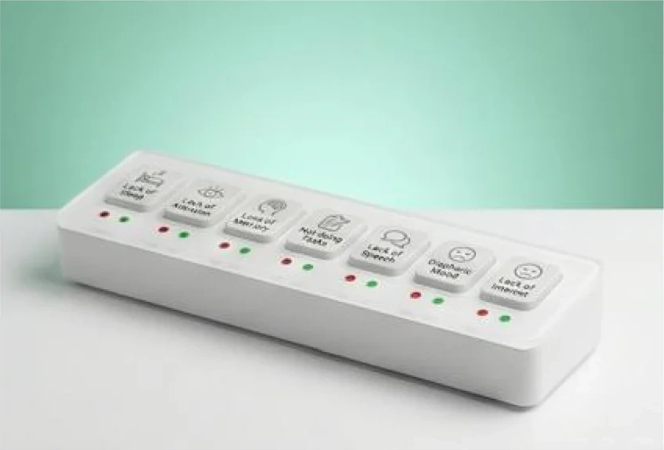

Responsibility without enough support.
Caregiver interviews surfaced gaps in information, feelings of isolation, and difficulty navigating the condition.
Designing for the caregiver
Empowering caregivers and enhancing support during phases of schizophrenia.
An illustrated guidebook. Words that support. A tangible way to notice change.
01 / The project at a glance
Families take on a demanding role in everyday care. SAHAY explores how design can give them more understanding, a more supportive way to communicate, and a simpler way to notice change.
Caregiver interviews surfaced gaps in information, feelings of isolation, and difficulty navigating the condition.
An illustrated guidebook, vocabulary cards with audio, and a tangible observation tracker address different moments in caregiving.
Research synthesis, journey mapping, concept development, visual communication, physical computing, and expert prototype reviews.
Follow the story, or open the original research boards in each chapter.
The original background panel records the statistics and sources used during the study; the figures retain their original dates.
02 / Research · Personal motivation
The study began with my elder brother, who lives with schizophrenia, and my attempt to understand what he was experiencing.
That personal encounter opened a wider question about stigma. As the research progressed, my attention moved closer to home: to the family members trying to provide care.
Personal motivation described in the original project documentation.
Films, photography and stories of illness opened the research. The first brief focused on stigma; the fieldwork would bring it closer to everyday caregiving.
02 / Research · Listening
Secondary research, expert interviews, caregiver conversations, and contextual inquiry brought different perspectives into the same picture.
The scoping study included clinical psychiatry, counselling psychology, psychology, and neuroscience. Caregiver interviews then brought the focus to information, daily responsibility, and family life.
The research made the caregiver visible as a person with support needs of their own.
The process brought together desk research, professional perspectives and family experience. The original interviews, synthesis and user profiles are collected here.
01 / The design pivot
The research shifted the brief from public awareness to the everyday needs of family caregivers.
02 / Research · The design brief
Caregivers described difficulty understanding the condition and finding useful information.
Fear, guilt, stigma, and helplessness appeared in the interview synthesis.
The research identified a gap between the family’s day-to-day experience and the wider support system.
How might we reduce stigma around psychological disorders?
How might we support informal caregivers in India with the understanding and tools they need through different phases of schizophrenia?
The direction was narrowed against feasibility, access and testing. A stakeholder workshop then connected the caregiver’s daily role to specific intervention opportunities.
The original framing posters examine episodic care, patient-facing tools, caregiver support and crisis response. Their broad clinical claims are project framing, not validated findings from this prototype.
03 / The toolkit
The journey map became a way to locate the intervention. Each part of SAHAY responds to a different caregiver need, with professional guidance connecting the system.

01 / UNDERSTANDAn illustrated guidebook introduces knowledge through a narrative.
Explore the guidebook
02 / COMMUNICATEVocabulary cards make conversational guidance tangible and revisit-able.
Explore the cards
03 / OBSERVEA physical tracker turns observations into a record for discussion.
Explore the trackerThese are design opportunities along a care journey, not a fixed clinical sequence.
The illustrated journey was translated into phases, opportunities and design criteria. Together they explain why the project became a toolkit.
EMBRACE turns information into a narrative that a caregiver can return to, at their own pace.
The handbook brings together explanations, myths and facts, illustrations, and questions. Its purpose is to make the first encounter with unfamiliar information less overwhelming.
A physical reference can be revisited and shared during conversations at home.
It offers a reading path through a subject that can otherwise feel fragmented.
The project compared a digital portal, a physical book and educational workshops. It selected a narrative guidebook, developing the content through secondary research and consultation at ASHA Hospital.
The complete concept sequence preserves the alternatives, content process, narrative structure and final sample spreads.
The cards explore how a caregiver might pause, consider their words, and respond with greater empathy.
Paired examples contrast conversational approaches. NFC-enabled audio explores how tone can accompany the written phrase.
The prompt can be picked up, discussed, and revisited without navigating a long resource.
Audio extends the prototype beyond written language to how a phrase is delivered.
Prototype examples illustrate the design concept. Individual communication needs require guidance from the care team.
IVR and a separate audio device were considered alongside vocabulary cards. The selected direction paired printed prompts with audio, using the phone to explore tone without adding another dedicated device.
The full development trail follows the acute-phase opportunity, concept selection, interaction scenario, printed prototypes and audio-access experiments.
A physical interface explores a simpler way for families to record everyday changes and discuss them with a professional.
The prototype combines labelled inputs, a microcontroller, and Adafruit data collection and visualisation. The intent is to support continuity between home observations and clinical conversations.
A research prototype. Its alert logic is not a clinically validated relapse prediction or diagnostic system.
Journaling and visual pattern tracking were compared with a tangible device. The prototype explored labelled inputs for negative and cognitive symptoms, with a microcontroller passing records to Adafruit for visualisation and warning logic.
These boards preserve the category selection, product form, use scenario and connected prototype. Warning intervals shown in the sketches are illustrative prototype logic, not clinical thresholds.
02 / From insight to interaction
The paper-tracking exercise exposed the effort of logging and interpreting observations. Making the tracker tangible became the next design step.
04 / Development · Making and testing
Paper tracking revealed the effort of recording, counting, and interpreting observations. Those difficulties guided the move towards a tangible interface.
Families found the dots difficult to scan and the counting time-consuming. The record needed to be easier to interpret.
The exercise raised a practical question: how could more than one family member contribute to the same record?
Mechanical trials, input sketches, electronic components, and enclosure prototypes made the interaction tangible enough to discuss.
The seven-day recording exercise informed data-storage sketches, mechanical experiments, warning feedback, tap-to-register inputs and the working enclosure.
04 / Development · Visual language
Embracing hands, illustration and conversational content give the physical toolkit a shared, approachable identity.
The guidebook and cards share a visual vocabulary. Colour helps distinguish content, while words and illustrations carry the meaning.
Palette drawn from the existing toolkit artwork.
Hands and gestures connect the materials to care, communication, and support.
Short sections and a recurring page structure help organise unfamiliar information.
Physical objects, written prompts, pictures, and audio explore complementary ways to access support.
03 / Learning from the prototype
Two expert-review rounds helped clarify the use case, language, physical form and access to audio.
05 / Expert review
Two documented expert-review rounds at ASHA Hospital explored the tracker and cards. The feedback identified both promise and practical changes to pursue.
Status: two formative expert reviews. Clinical effectiveness and long-term use have not been established.
06 / Reflection and next steps
SAHAY translates caregiver research into a connected set of physical and digital prototypes. Its strongest contribution is the link between a need, a moment in the journey, and an interaction that can be tested.
The project received a registered design from the Patent Office, Government of India, in 2026.
A longer home-use study with caregivers; clearer shared logging; accessible alternatives to NFC; and clinician-led evaluation of what observations are useful and how they should be interpreted.
Make learning approachable. Respect the caregiver’s time. Keep the person receiving care at the centre. Let the technology support the relationship.
The longer-term ambition
The original impact poster sets out ambitions for fewer crises, less disruption to family life and a path towards continuous support. It proposes a clinical pilot, regulatory assessment and a manufacturable low-cost version.
These are intended future outcomes. The work presented here establishes a design and prototype direction, not measured health or economic impact.